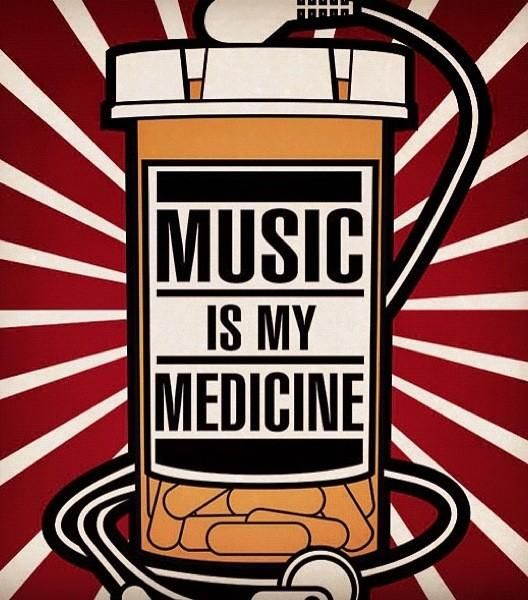
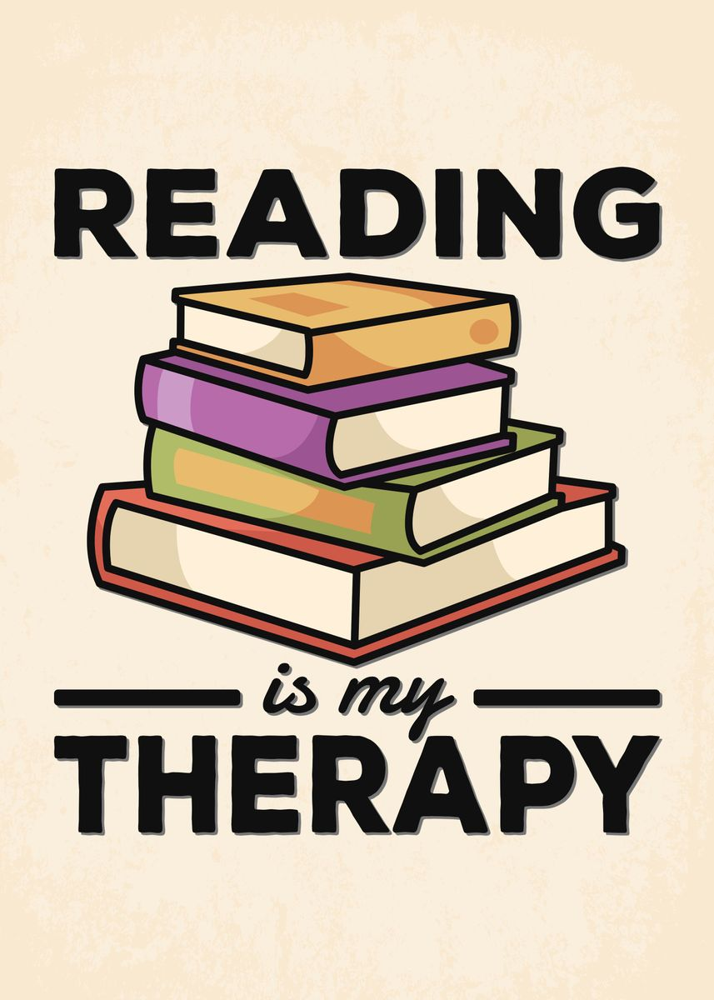
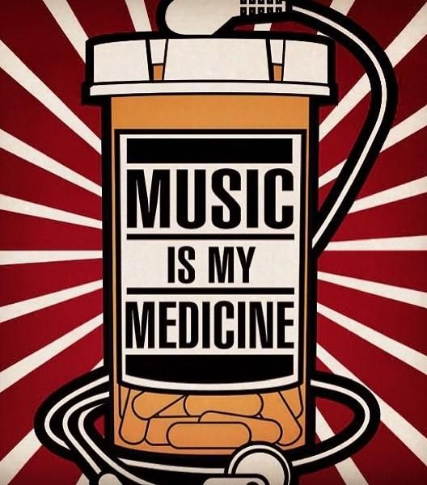
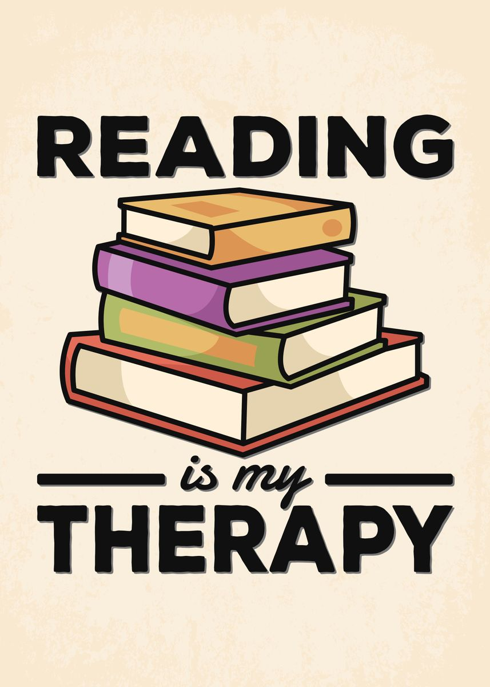

The Man Behind The Keyboard
My Life's Trajectory, Nov 14, 2021

Hi! My name is Ethan Nakamura, and I'm an active duty servicemeber. I currently work for the United States Air Force as an intelligence analyst for the National Security Agency. While I can neither confirm nor deny if I've worked with aliens, I can confirm that my almost six years of service will be coming to an end in February of 2022. I was raised by a single mother who later joined the ARMY where she met my step-father. After experiencing the full lifecycle of a military family, I'v realized that it's time for me to transition back to civilian life. Being in the service allowed me to meet my wife, and as of 2020 we had our first baby, a boy. My life has since been filled with diaper explosions, being kicked in the face during the night by little feet, and waking up at three in the morning to fulfill my most sought after job yet, the milk-refill guy. At the ripe age of 28, I've discovered that nothing matters more to me than time and both with who and how I spend it. After the thousands of hours of work and everything in my life that came with being in my profession I realized that it was time for me to re-assess this thing called life and make a career change. I hope that my journey through coding will allow me to break out of the intelligence field and catch a new ride into a tech career. I want to show companies what I have to offer, my experience and myself.

 


